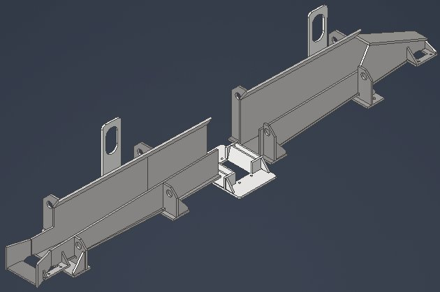

The trough sits in a continuous stream of radiant heat from bars passing at 1,600–2,000°F, descale spray that hits the structure every cycle, and iron-oxide scale — a hard, glassy flake that sheds off the bar at speed and sandblasts anything in its path. The structure has to survive all three simultaneously for years between planned rebuilds.
The design loads aren't the weight of the trough or even the weight of the bar — they're the force of a bar arriving slightly off-line at rolling speed, and the worst-case cobble: a multi-ton mass of folded hot steel piling up inside the structure. The trough has to absorb that without permanent deformation so it can go straight back into the line.

A fixed wear plate takes the full impact of the bar at the same spot every single pass — thousands of times a day. The energy doesn't distribute; it concentrates. The plate heats up, the contact zone work-hardens and erodes, and eventually the plate wears through before the campaign ends, forcing an unplanned shutdown.
A rotating roll converts that stationary impact into rolling contact. The bar still lands on it — but instead of one spot absorbing everything, the load spreads across the entire roll face as it turns. No single area accumulates damage at the same rate. The same energy input produces dramatically less wear per unit of surface area. And, rolls can easily be replaced upon wearing.
Rolling contact reduces wear, but it doesn't eliminate heat. Each bar deposits a thermal pulse into the roll on contact — and if the roll body climbs above its tempering range, the surface steel softens, loses its hardness, and wears rapidly anyway. You've solved the mechanical problem and created a thermal one.
Running cooling water through the core of each roll extracts that heat continuously, keeping the roll body well below the temperature where its mechanical properties degrade. The roll stays hard, the contact geometry stays consistent, and the assembly runs the full campaign without the failure mode that made the original plates unacceptable.